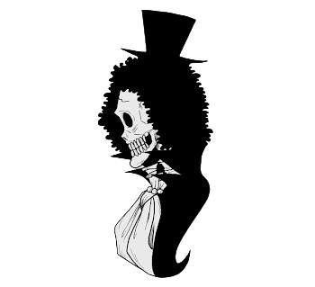

"Soul King" Brook[12] is the musician of the Straw Hat Pirates, one of their two swordsmen, and one of the Senior Officers of the Straw Hat Grand Fleet.[3] He is the ninth member of the crew and the eighth to join,[18] doing so at the end of the Thriller Bark Arc. Brook ate the Yomi Yomi no Mi, which allowed him to return to life after death once.[19] Brook eventually learned to tap deeper into the powers of his Devil Fruit, giving him significant control over his own soul and the souls of others. Previously the captain of Esperia Kingdom's Battle Convoy[4][5] and later a member of the Rumbar Pirates, he died and was resurrected through the power of the Yomi Yomi no Mi. However, due to the amount of time it took for his soul to find his body, it was reduced to a skeleton, keeping only his afro intact.[19] Brook drifted alone in the Florian Triangle for 50 years, eventually meeting Luffy and serving as the Straw Hats' ally during the Thriller Bark Arc before officially joining the crew. His dream is to reunite with his old friend, Laboon, at Reverse Mountain, where he resides with Crocus.[20] He first gained a bounty of Beli33,000,000 during his time as a member of the Rumbar Pirates. It later increased to Beli83,000,000 after the Dressrosa Arc. Following the Raid on Onigashima, his bounty was increased to Beli383,000,000.[3]
For more info visit this page